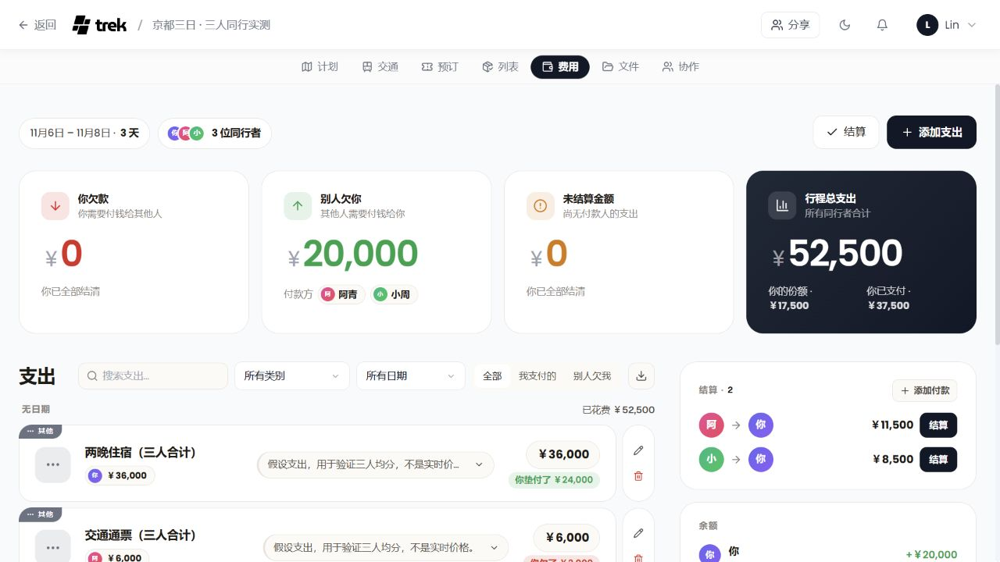
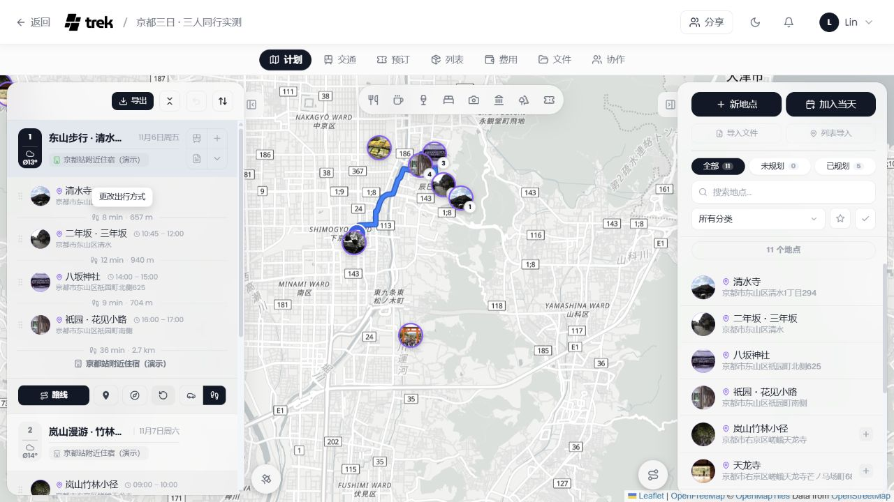
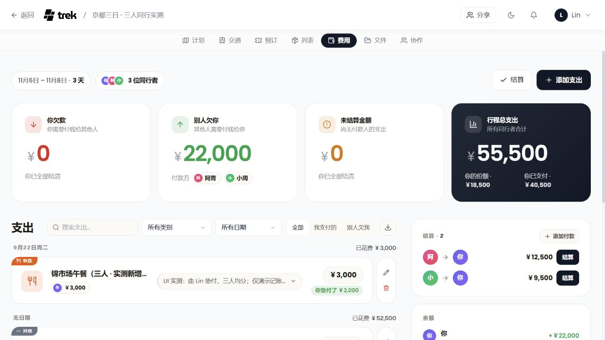

总支出 52,500 JPY每人承担 17,500 JPY
新增 / 以地点为中心的旅行产品
选景点与美食，读懂推荐理由，安排三天行程；在真实地图上查看道路路线，再保存到 TREK。
ORIGINAL TREK · 本机原版已部署
3 位同行者、3 天行程、11 个地点。从地图上安排每天去哪，到旅途中各自付款，再到最后算清谁欠谁——直接使用原版产品体验。
运行的是上游 TREK 4.3.0。地点与底图真实；同行者、费用和预订是演示数据，没有发生订票或付款。
01 / 看见真实产品
画面来自本机运行的 TREK。
进入原版后，可以继续编辑同一趟旅行。

打开原版 →「计划」→ 点击第一天的「清水寺」查看详情。关闭详情后点击当天的「路线」，查看道路走向、分段距离与预计时间。
返回研究总览 ↗02 / 一次改动，会发生什么
在原版「费用 → 添加支出」中录入，
选三人平均分摊，然后保存。


阿青需给 Lin 12,500 日元；小周需给 Lin 9,500 日元。
两笔往来即可结清。已刷新原版页面验证数据保留。这里是记账与结算建议，不是支付服务。03 / 为什么用它
开源仓库包含完整应用。
价值在于把旅行信息组织到一起。
朋友各自推荐地点，汇总到一趟旅行；结合真实位置安排每天去哪，查看住宿与交通时间。
适合：多人自由行、长线旅行同一笔支出记录付款人和参与者，自动更新每个人的份额与往来余额，不必回来重新翻聊天记录。
适合：朋友 AA、共同预算如果你要做旅行产品，它提供现成的行程、费用、权限与数据结构；扩展前需评估许可证、外部服务和维护成本。
参考：完整业务应用的实现这次实测背后发生了什么
底图由外部地图服务提供；地点、每日安排、预订、费用和清单由 TREK 管理。本次已验证地图展示、费用保存与分摊、清单勾选和刷新保留；AI、离线冲突恢复和跨账号协作尚未实测。
继续看技术流程说明 ↗原版实测范围
本机演示登录信息保留在本地服务配置中，公开页面不展示。
本地服务需保持运行；公网静态页只展示实测截图。重新启动方式见研究说明。